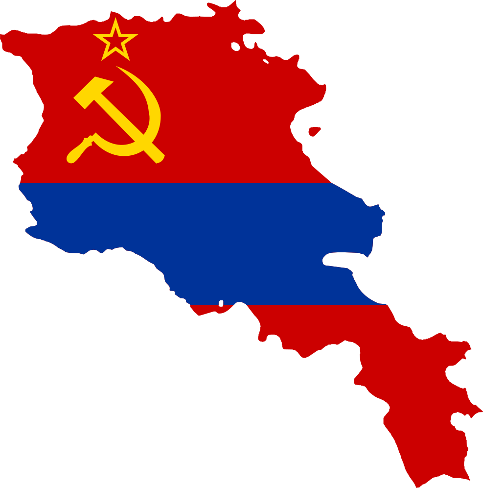

Armenia participated in the Second World War on the side of the Allies under
the Soviet Union. Armenia was spared the devastation and destruction that wrought most of the
western Soviet Union during the Great Patriotic War of World War II. The Nazis never reached the
South Caucasus, which they intended to do in order to capture the oil fields in Azerbaijan. Still,
Armenia played a valuable role in aiding the allies both through industry and agriculture. An
estimated 300–500,000 Armenians served in the war, almost half of whom did not return. Armenia
thus had one of the highest death tolls, per capita, among the other Soviet republics.

A total of 117 citizens of Armenia including 10 non ethnic Armenians were
awarded Hero of the Soviet Union. Of these, 36 had been killed in action and were awarded this title
posthumously. 27 Armenian soldiers and sergeants were also awarded the Order of Glory, and a
total of 66,802 participants from Armenia were awarded orders and medals of the Soviet Union.
Armenians living in the areas occupied regions of the Soviet Union formed partisan groups to combat
the Germans. Over sixty Armenians were promoted to the rank of general, and with an additional
four eventually achieving the rank of Marshal of the Soviet Union. Hovhannes Bagramyan was both the
first non-Slavic Marshal and commander to hold the position of front commander when he was assigned
to be the commander of the First Baltic Front in 1943. Admiral Ivan Isakov became the second Admiral
of the fleet of the Soviet Union. Hamazasp Babadzhanian was the second of only two Chief Marshal of
the Tank and Armored Troops. Sergei Khudyakov had been among the third to be Marshal of
Aviation.
The Armenian SSR provided weapons and rebuilt broken airplanes. Workers donated to the Defense Fund 216,000,000 rubles. Armenia, as a gift, sent to the front 45 wagons of provisions. Armenian communities in the Middle East and the West also donated considerable sums of money to the Soviet government to help construct a series of tanks for the Red Army. These tanks were named after David of Sasun, the hero of an Armenian medieval epic, and Marshal Bagramyan. ...
Six special military divisions
Six special military divisions were formed in Soviet Armenia in 1941–42, partly because so many draftees from the republic could not understand Russian. These six divisions alone had more than 67,000 soldiers. Five of them, the 89th, 409th, 408th, 390th, and 76th Divisions, would have a distinguished war record, while the sixth was ordered to stay in Armenia to guard the republic's western borders against a possible incursion by neighboring Turkey. The 89th Tamanyan Division, composed of ethnic Armenians, distinguished itself during the war. Led by Major General Nver Safaryan, it fought in the Battle of Berlin and entered Berlin. Many Armenian soldiers also served in two other multi-ethnic divisions. They came not only from Soviet Armenia, but also from the other Soviet republics and other countries with considerable Armenian minorities.The Armenian SSR provided weapons and rebuilt broken airplanes. Workers donated to the Defense Fund 216,000,000 rubles. Armenia, as a gift, sent to the front 45 wagons of provisions. Armenian communities in the Middle East and the West also donated considerable sums of money to the Soviet government to help construct a series of tanks for the Red Army. These tanks were named after David of Sasun, the hero of an Armenian medieval epic, and Marshal Bagramyan. ...